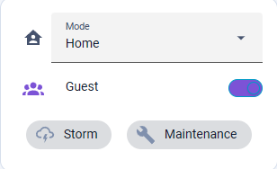
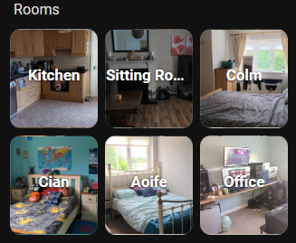
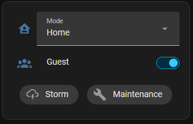
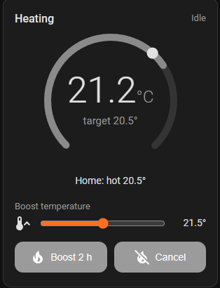
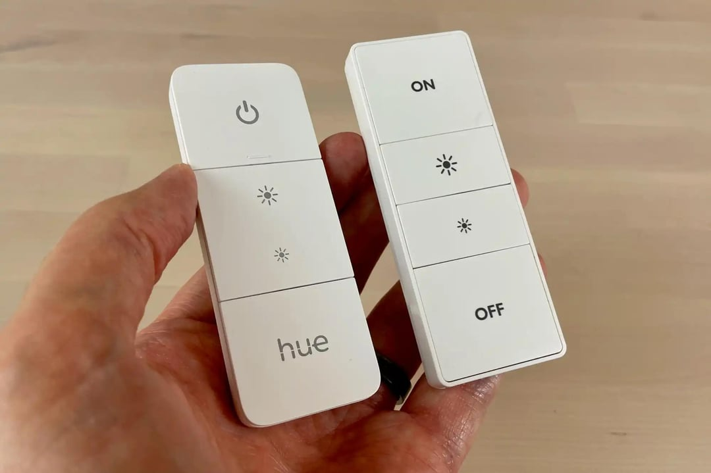
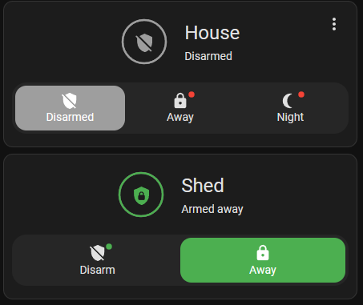
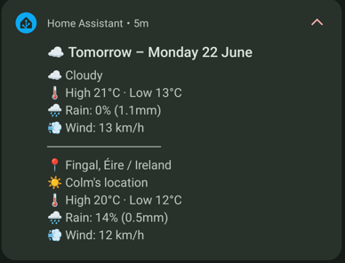

A quick guide to what the house does by itself, and the few things worth knowing how to drive. Tap a section to begin.
The house keeps one overall state, and almost everything follows it. You never normally need to set it — it works itself out from who's home and what's happening.
| Mode | When | What happens |
|---|---|---|
| Home | At least one of us is in | Alarm off, heating comfortable (warmest in the evening) |
| Away | Both out ~20 min, no movement inside | Alarm arms fully, heating eases back, camera alerts become urgent |
| Sleeping | Late: TVs & lights off, still 20 min | Alarm arms the perimeter, heating drops to the night temperature |

The House Mode card on the Home tab, showing the current mode.
Storm and Maintenance on the card are automatic — they light up by themselves (Storm during a weather warning, Maintenance while Colm is working on things) and need nothing from you.
Every room has its own hidden tab in the app.

The room pictures on the Home tab — tap one to open that room.
Flip Guest Mode on (Home tab, the House Mode card) when anyone is staying:
Just remember to turn it off when they leave.

Guest Mode switched on — the toggle turns green.
Fully automatic, using three set temperatures:
It eases right back when nobody's home, starts warming when one of us is driving home, and gets up earlier on cold mornings based on the forecast.

The ring shows the current temperature (dot = target) and glows orange while the boiler is heating.
Most rooms have a little dimmer switch on the wall for the lights. There are two types around the house — an older square one and a newer rounded one — but they work exactly the same way, with four buttons:

The two types — same four buttons, top to bottom.
| Button | What it does |
|---|---|
| Top — On | Turns the room's lights on. Press it again to cycle through the room's moods (bright, dimmed, night…). Hold for full brightness. |
| ▲ Up | Brighter — hold to brighten faster. |
| ▼ Down | Dimmer — hold to dim faster. |
| Bottom — Off | Turns the room's lights off. |
Each dimmer controls the lights in its own room.
Handy to know: the switches are only held to the wall magnetically — you can lift one off its plate and use it like a remote control from the sofa or bed, then just pop it back on the wall when you're done. It works exactly the same off the wall.

The House and Shed panels — normally you never need them (it follows House Mode), but they're there for manual arming or disarming.
What the speakers tell you:
The kitchen display — the main voice of the house.
| Notification | What it is |
|---|---|
| Morning weather (8:30) | Today's forecast; 9:30pm one for tomorrow |
| 7am security summary | Anything the cameras saw overnight |
| Washer / dryer / dishwasher | Cycle started and finished, with the cost |
| "Peak rate" nudge | An appliance starting 5–7pm — suggests waiting until after 7 (electricity is dearer then) |
| ⚠️ Cameras Away | Urgent: someone at the house while it's empty |

What some of these look like when they arrive.
| I want to… | Do this |
|---|---|
| Make it warmer for a while | Home tab → slider + Boost 2 h (or dial up) |
| Stop a boost | Cancel on the card, or turn the dial down |
| Change the lights | The wall dimmer — top for on/moods, up/down for brightness |
| Have guests stay | Guest Mode on; off when they go |
| Go to the shed | Tap the back-door tag first |
| Garden without camera alerts | Tap the patio tag; closing the door turns it back on |
| Put the cage outside safely | Tap the cage tag to arm the cat alarm |
| Know why it did something | Ask Colm — it's all logged 😄 |
If something seems stuck it almost always sorts itself within a minute or two — and if not, Colm can see exactly what happened.
A game for everyone: the sitting room TV plays the first few seconds of a song from our own collection, and you race to name it on your phone.
Open this on your phone (works only on our wifi):
| Step | What to do |
|---|---|
| 1 | Everyone taps the button above and types their name |
| 2 | While waiting, pick 3 artists you know from the wall — a song from each player’s picks sneaks into the game (nobody knows which rounds!) |
| 3 | The game master taps Start — the scoreboard and the music appear on the sitting room TV (it turns on by itself) |
| 4 | Listen… then tap the right song on your phone — faster answers score more! |
| 5 | Stuck? Anyone can tap “play a bit more” to hear extra seconds — one go at a time: the button unlocks again once the longer clip finishes |
| 6 | After each round: the album cover and a proper chunk of the song — it plays in full before the next round can start, so enjoy it |
| 7 | Half time (after round 5): everyone’s phone shows a music fact to read out to the table, then three quick true-or-false questions — worth +50 points each on the scoreboard! |
One phone is the game master — it runs the rounds, and a 🎤 banner on every phone shows who it is. The master changes every game: the final scores screen announces who runs the next one.
Ten rounds a game. Every game counts towards the all-time leaderboard, and the TV now shows it — while everyone’s joining, and again beside the final scores. The bragging rights are permanent (and public). If a clip is rubbish (just clapping, say), tap “🚫 bad clip” and it will never appear again.
Good to know: the start screen also has a “no scoreboard” choice — then the music plays from the sitting room speaker instead of the TV. And if a game gets abandoned mid-way (dinner’s ready), tap “abandon game” at the top of your phone screen — no scores are kept for unfinished games.
We play music through the house speakers with Music Assistant — search for a song, artist or playlist and it plays on whichever speakers you choose.
| Step | What to do |
|---|---|
| 1 | Open Music Assistant (in the sidebar) |
| 2 | Choose where it plays — tap the speaker picker and pick a speaker, or Home Music Group to play everywhere at once. This is the step people forget — without it, nothing plays |
| 3 | Search for a song, artist or playlist and press play |
| 4 | Set the volume — for one speaker, or for the whole group |
Home Music Group plays the two hi-fi speakers and the computer together, in sync — ideal for music right through the house. (For the computer to join in, its Music Assistant app needs to be open on it.)